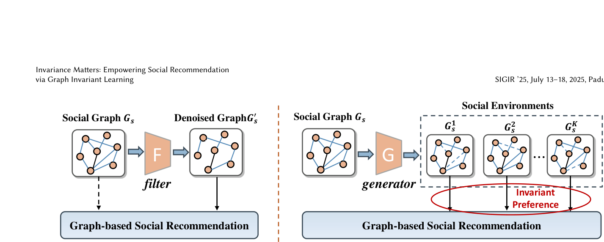
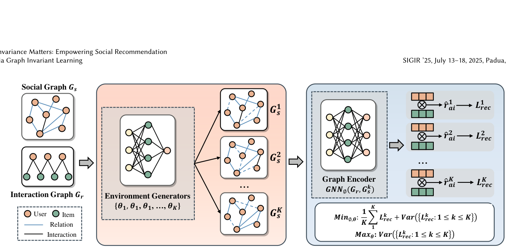

Invariance Matters: Empowering Social Recommendation via Graph Invariant Learning (不变性至上：以图不变学习赋能社交推荐)
- 会议/期刊: SIGIR 2025
- 作者与机构: Yonghui Yang, Le Wu (通讯), Yuxin Liao, Zhuangzhuang He, Pengyang Shao, Richang Hong, Meng Wang；合肥工业大学大数据知识工程重点实验室 / 合肥综合性国家科学中心数据空间研究院
- 推荐链路定位: 召回（图嵌入召回，LightGCN-S 骨干）
- 研究方向: 社交与群组推荐 / 自监督对比学习与交互去噪
- 论文原文: https://arxiv.org/abs/2504.10432v2
- 开源代码: https://github.com/yimutianyang/SIGIR2025-SGIL
TL;DR (1分钟核心速览)
社交图天然含任务无关噪声，但"哪条边是噪声"没有 ground truth，现有过滤式去噪（GBSR/ShaRe/GDMSR）本质是在无标签下猜边、易误删。本文换范式：不删边，而是用 \(K\) 个偏好引导的边丢弃生成器模拟多个噪声社交环境，在环境间做不变风险最小化（IRM）逼出跨环境稳定的用户偏好，并用对抗训练最大化环境间风险方差以扩大环境多样性。三个数据集 Full-Ranking 协议下，NDCG@20 较最强基线 GBSR 提升 5.39%–8.70%，较骨干 LightGCN-S 提升 17.58%–32.01%。
Background & Motivation (背景与核心矛盾)
- 主流范式: 图社交推荐（DiffNet++/SocialLGN/LightGCN-S）把用户-物品交互图与用户-用户社交图拼成异构图做 GCN 传播，用高阶社交影响缓解交互稀疏。
- 前人局限: ① 直接聚合全部社交边并不稳定——Douban-Book 上所有图社交方法（GraphRec/DiffNet++/SocialLGN）反而低于纯 CF 的 LightGCN，说明社交边可带来负迁移；② 过滤式去噪（ESRF 对抗生成邻居、GDMSR 偏好引导剪枝、ShaRe 图重写、GBSR 信息瓶颈）都依赖"识别噪声边"，但无标签可验证，剪枝阈值/置信度本身不可靠，且剪掉的边不可恢复。
- 核心洞察 (Key Insight): 若某部分用户偏好能在各种噪声分布下都保持预测能力，它才对应真正任务相关的社交结构；因此不必知道哪条边是噪声，只需保证"跨环境不变性"即可隐式逼近充分且不变的社会子图（Assumption 1：充分性 \(y=f(\mathcal{G}_I)+\epsilon\)与不变性\(p(y|\mathcal{G}_I,e)=p(y|\mathcal{G}_I,e')\)）。
- 本文切入点: 把社交去噪重构成图 OOD 泛化问题——用环境模拟 + 不变风险最小化替代边过滤。

Method (核心方法设计)
1. 整体框架 (Overall Architecture)
输入交互图 \(\mathcal{G}_r\)与社交图\(\mathcal{G}_s\)，先用 LightGCN-S 编码得到用户/物品表征；再由\(K\)个独立 MLP 生成器依据用户偏好相似度输出每条社交边的保留概率，经 Gumbel-Softmax 重参数化采样出\(K\)个社交子图（即\(K\)个噪声环境）；每个环境各自拼异构图、跑 GCN、算 softmax 推荐损失\(\mathcal{L}^k_{rec}\)；最后以"均值风险 +\(\beta\cdot\)风险方差"做不变优化，同时用对抗步最大化方差以逼生成器产出更分散的噪声分布。推理时对\(K\) 个环境的用户/物品表征取平均后内积打分。
flowchart TD
A["交互图 Gr + 社交图 Gs"] --> B["K 个偏好引导环境生成器 (MLP + Gumbel-Softmax)"]
B --> C["K 个社交子图 Gs^1..Gs^K"]
C --> D["LightGCN-S 逐环境编码 + softmax 推荐损失"]
D --> E["不变风险最小化: 均值 + β·Var"]
E --> F["对抗步: max Var 更新生成器 θ"]
F --> G["推理: K 环境表征平均 → 内积打分"]
2. 关键设计拆解 (Key Designs)
-
偏好引导的多环境生成器（Environment Simulation）：痛点是无标签无法定位噪声边，故改为"造分布"。第 \(k\)个环境按边保留概率采样\(\mathbf{S}^k=\{s_{ab}\odot\rho^k_{ab}\}\)，其中\(\rho^k_{ab}\sim \mathrm{Bern}(w^k_{ab})+\epsilon\)，\(w^k_{ab}=g^k_\theta(\mathbf{e}_a,\mathbf{e}_b)\)由两层 MLP 从用户偏好表征算出，\(\epsilon=0.5\)保证已观测边置信度高于未观测边；离散采样用 Gumbel-Softmax 松弛\(\mathrm{Bern}(w_{ab})=\mathrm{sigmoid}((\log(\delta/(1-\delta))+w_{ab})/t)\)，\(t=0.2\)。直觉：不同生成器参数\(\theta^k\) 天然对应不同"噪声假设"，把不可知的噪声空间变成可枚举的环境集合。
-
环境级 ERM 的分布对齐改写：直接对单点 \((a,i)\)做 BPR 式对齐无法保证不变性（交互非 IID）。作者把损失改为按用户对齐整条交互分布\(\mathcal{L}^k_{rec}=\sum_{a}\mathcal{L}(\sigma(f^k_\phi(a,V)),\mathbf{R}_a)\)，并由贝叶斯推导出密度比\(p(a,i|r{=}1)/p(a,i|r{=}0)=C\exp(f^k_\phi(a,i))\)，代入 batch 内 softmax 得 $\(\mathcal{L}^k_{rec}=-\frac{1}{|\mathcal{D}|}\sum_{(a,i)\in\mathcal{D}}\frac{\exp(\langle \boldsymbol{p}^k_a,\boldsymbol{q}^k_i\rangle/\tau)}{\sum_{j\in\mathcal{I}_b}\exp(\langle \boldsymbol{p}^k_a,\boldsymbol{q}^k_j\rangle/\tau)}\)$ 即"每用户一个 softmax 列表"，使跨环境对齐发生在偏好分布层面而非单点分数层面。
-
不变性目标 + 对抗环境探索：总目标 \(\min_{\phi,\theta}\frac{1}{K}\sum_k \mathcal{L}^k_{rec}+\beta\,\mathrm{Var}(\{\mathcal{L}^k_{rec}\})\)，第一项保充分性、第二项保不变性；再用\(\max_\theta \mathrm{Var}(\{\mathcal{L}^k_{rec}\})\)让生成器主动寻找"最难一致"的噪声分布。为稳定对抗，探索步每\(T\)个 batch 执行一次（Douban/Yelp\(T{=}20\)，Epinions\(T{=}3\)）。训练负采样为 in-batch softmax（非 BPR 采样），推理为全库内积排序；额外开销仅\(K\)个\(2d\times d\) MLP，总训练时间约为 LightGCN-S 的 1–3 倍。
Experimental Setup & Evaluation Protocol (实验设置与评估协议)
- 数据集与预处理: 沿用 GBSR 的三数据集设定，随机抽 80% 交互作训练、20% 作测试（比例划分，非 Leave-One-Out）。
| 数据集 | #Users | #Items | #Interactions | 交互密度 | 社交边数 / 关系密度 |
|---|---|---|---|---|---|
| Douban-Book | 13,024 | 22,347 | 792,062 | 0.048% | 169,150 / 0.268% |
| Yelp | 19,593 | 21,266 | 450,884 | 0.034% | 864,157 / 0.206% |
| Epinions | 18,202 | 47,449 | 298,173 | 0.035% | 381,559 / 0.115% |
- 数据划分与防穿越 (Splitting Strategy): 随机 80/20 比例划分；另构造半合成数据集（按比例 \(\sigma\) 注入虚假社交边）用于噪声鲁棒性测试。
- 排名评测协议 (Ranking Protocol): 无偏
Full-Ranking（全部未交互物品为候选），指标 Recall@10/20、NDCG@10/20。 - 对比基线与超参设置: 图社交类 GraphRec、DiffNet++、SocialLGN、LightGCN-S；去噪类 ESRF、GDMSR、SEPT、ShaRe、GBSR（均统一架在 LightGCN-S 骨干上）。\(d=64\)，GCN 层\(L=3\)，\(\tau=0.2\)，\(\epsilon=0.5\)，Adam lr=1e-3，batch=2048，\(p<0.05\) 显著性。
Key Experimental Results (实验关键数据)
1. 主实验对比 (Main Results)
| 模型 | Douban R@20 | Douban N@20 | Yelp R@20 | Yelp N@20 | Epinions R@20 | Epinions N@20 |
|---|---|---|---|---|---|---|
| LightGCN | 0.1526 | 0.1283 | 0.1081 | 0.0623 | 0.0675 | 0.0385 |
| DiffNet++ | 0.1489 | 0.1270 | 0.1114 | 0.0640 | 0.0727 | 0.0406 |
| LightGCN-S | 0.1506 | 0.1281 | 0.1126 | 0.0651 | 0.0716 | 0.0417 |
| SEPT | 0.1592 | 0.1382 | 0.1176 | 0.0682 | 0.0724 | 0.0416 |
| ShaRe | 0.1544 | 0.1325 | 0.1138 | 0.0658 | 0.0771 | 0.0438 |
| GBSR | 0.1694 | 0.1523 | 0.1243 | 0.0724 | 0.0793 | 0.0464 |
| SGIL | 0.1809 | 0.1627 | 0.1323 | 0.0787 | 0.0844 | 0.0489 |
| Improv. (vs GBSR) | +6.79% | +6.83% | +6.44% | +8.70% | +6.43% | +5.39% |
2. 消融实验 (Ablation Study)
| 变体 | Douban N@20 | Yelp N@20 | Epinions N@20 | 说明 |
|---|---|---|---|---|
| SGIL-w/o EG | 0.1495 | 0.0713 | 0.0417 | 去掉环境生成器，退化为 LightGCN-S+ERM |
| SGIL-w/o IL | 0.1562 | 0.0735 | 0.0436 | 去掉不变性正则，仅用多环境均值表征 |
| SGIL-w/o EE | 0.1626 | 0.0773 | 0.0487 | 去掉对抗环境探索 |
| SGIL | 0.1627 | 0.0787 | 0.0489 | 完整模型 |
3. 关键实验发现 (Key Findings)
- 环境模拟是最大贡献项：去掉 EG 后 NDCG@20 从 0.1627 掉到 0.1495（Douban，−8.1%），甚至低于 GBSR 的 0.1523，说明"多环境"本身比"不变性正则"更关键——没有环境多样性，IRM 项无从谈起。
- 噪声越重优势越大：在半合成数据上注入噪声比 \(\sigma=2.0\)时，SGIL 相对骨干提升约 28%，且随\(\sigma\) 增大各去噪方法相对骨干的增益单调上升，验证不变性范式对高噪声分布的外推能力优于边过滤。
- 稀疏用户受益更多：按交互量分 Low/Medium/High 三组，SGIL 在 Low 组相对骨干的提升幅度最大，符合"长尾用户更依赖社交信号、因而更需稳定社交结构"的假设；参数上 \(K=4\)在三数据集一致最优，\(\beta\) 最优值分别为 0.15/0.05/0.10，说明不变性权重需按数据噪声强度调节。
Highlights & Limitations (亮点、对比与审稿批判)
- 与代表作对比 (vs. Prior Work): 与 GBSR（信息瓶颈剪枝，需保留"最小充分"子图）本质不同——SGIL 不删任何边，而是让所有边在概率意义上参与多个环境，靠跨环境一致性自动压低噪声边的影响；与 ShaRe（对比学习重写图）相比，SGIL 的监督信号来自风险方差而非增广视图一致性，且对抗步使环境分布可学习而非固定增广策略；与 ESRF（对抗生成邻居）相比，ESRF 的对抗目标是"生成更难的邻居再过滤"，SGIL 的对抗目标是"生成更分散的环境以扩大不变性约束的覆盖"。
- 可迁移亮点: ① "每用户 softmax 列表损失 + 密度比推导"可迁移到任何需要分布级对齐而非点级对齐的推荐场景；② 跨 batch 的对抗探索调度（每 \(T\) 步一次）是稳定 IRM 类对抗训练的实用技巧。
- 审稿级局限批判: ① 训练开销为骨干的 1–3 倍且需 \(K\)倍前向，\(K\)与\(\beta\) 需逐数据集网格搜索，工业部署成本不可忽视；② 环境生成器仅基于用户偏好相似度构造边丢弃分布，噪声假设仍偏窄（未覆盖"恶意/机器人社交边"等结构性噪声），且 80/20 随机划分未做时间切分，存在未来交互泄漏风险，离线增益到线上的转化缺乏 A/B 验证。
Rating (四维评分)
- 方法创新性 (Novelty): ⭐⭐⭐⭐ （把社交去噪从"无标签剪边"重构为图不变学习，范式转换清晰，且有 IRM 理论假设支撑）
- 评估协议与实验扎实度 (Protocol & Experiments): ⭐⭐⭐⭐ （三数据集 + 半合成噪声 + 稀疏分桶 + 参数敏感性齐全，Full-Ranking 无偏，但缺时间切分与线上验证）
- 写作与数学规范度 (Clarity & Rigor): ⭐⭐⭐⭐ （密度比推导与 ERM 改写链条完整，复杂度分析到位；部分符号如 \(\epsilon\) 兼作偏置与噪声略有歧义）
- 工业落地与复现价值 (Industrial & Practical Value): ⭐⭐⭐⭐ （代码已开源、即插即用于 LightGCN-S 骨干，但 \(K\) 倍训练开销与超参搜索成本限制大规模直接上线）